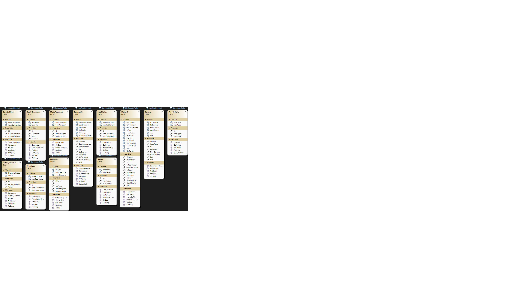
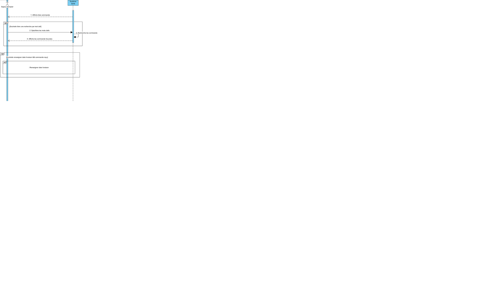
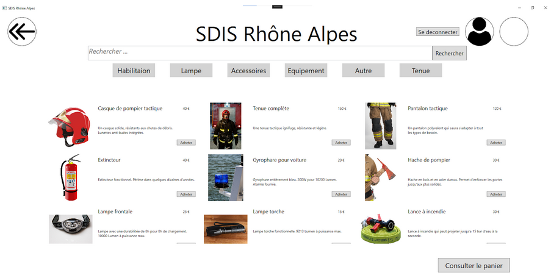
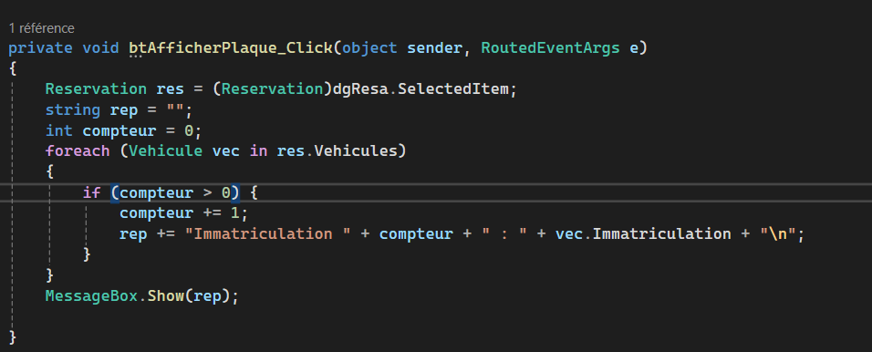
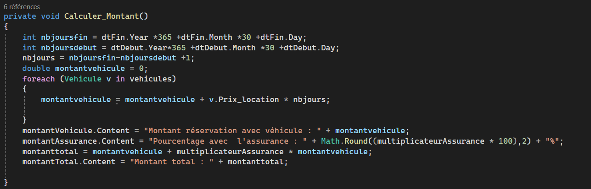
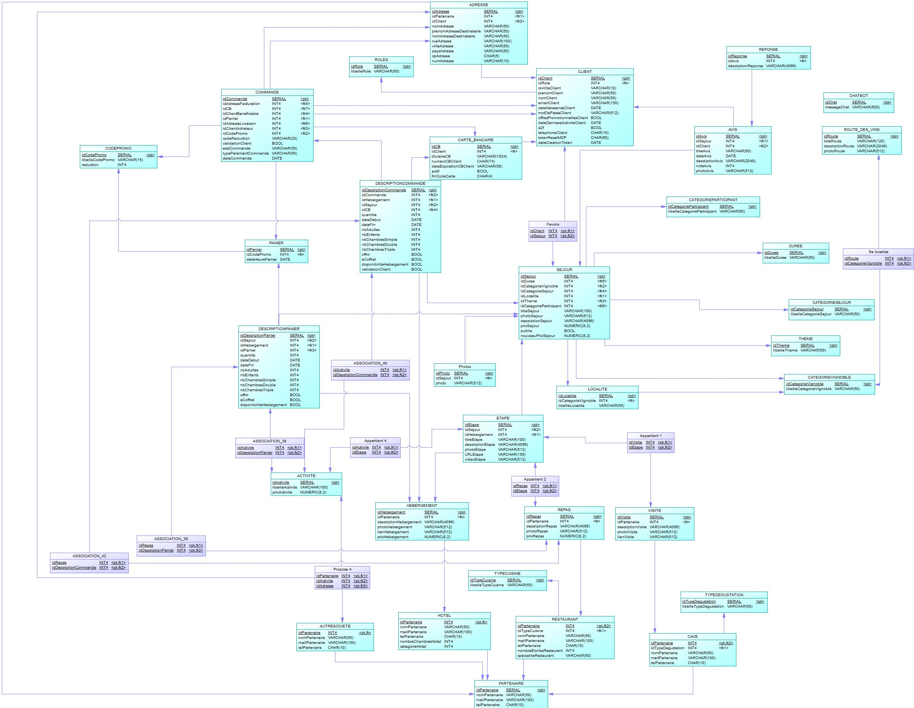
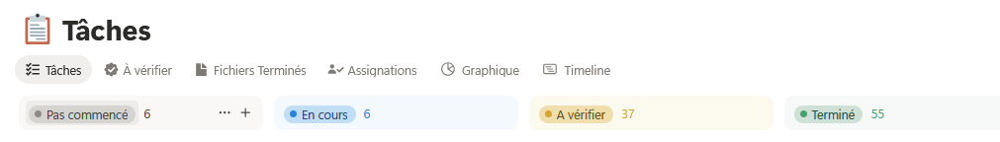

Mes compétences
Actuellement en 3ème année de BUT Informatique, parcours Réalisation d'Applications : conception, développement, validation voici les compétence valider jusqu'à présent.
Réaliser un développement d'application
Niveau 1 : Développer des applications informatiques simples
Durant ma 1ère année de BUT Informatique, j'ai développé une application réservation et de gestion d'équipement pour des caserne de pompiers en équipe de 3 étudiants.
AC11.01 | Implémenter des conceptions simples
Création de classes pour manipuler les objets du système de réservation en suivant le diagramme de classes conçu en amont.
AC11.02 | Élaborer des conceptions simples
Réalisation de diagrammes UML (diagrammes de classes et de séquences) avec Visual Paradigm pour structurer l'application avant le développement.
AC11.03 | Faire des essais et évaluer leurs résultats
Tests manuels systématiques de chaque fonction développée pour valider leur conformité aux spécifications du cahier des charges.
AC11.04 | Développer des interfaces utilisateurs
Conception et développement d'interfaces WPF pour toutes les étapes de réservation : authentification, recherche d'équipements, ajout d'options, création client(caserne).
Niveau 2 : Partir des exigences et aller jusqu'à une application complète
Durant ma 2ème année, j'ai développé un site e-commerce de vente de vélos électriques d'occasion (Vinotrip) en équipe de 5 étudiants avec Laravel.
AC21.01 | Élaborer et implémenter les spécifications
Analyse complète du document client et réalisation de diagrammes UML/BPMN : Use Cases, séquences, classes, états, classes participantes, et collaborations BPMN.
AC21.02 | Appliquer des principes d'accessibilité et d'ergonomie
Interface avec bandeau de navigation intuitif, menus déroulants organisés, recherche avancée avec filtres, système de favoris et alertes utilisateur.
AC21.03 | Adopter de bonnes pratiques
Organisation en sprints hebdomadaires, priorisation des fonctionnalités, répartition du travail en équipe, respect des conventions Laravel et cohérence du code.
AC21.04 | Vérifier et valider la qualité
Au second semestre, développement d'une API REST avec VueJS et mise en place de tests unitaires pour valider les échanges API et la cohérence des données.
Résultat
Plus de 80% des fonctionnalités finalisées en 5 semaines, application stable et démonstrations hebdomadaires au client.
Optimiser des applications informatiques
Niveau 1 : Appréhender et construire des algorithmes
Application de réservation de véhicules Intermarché (BUT1).
AC12.01 | Analyser un problème avec méthode
Découpage de chaque fonctionnalité en étapes simples : récupération des données, filtrage, tri, affichage, interactions.
AC12.02 | Comparer des algorithmes
Étude et choix de l'algorithme Foreach pour filtrer efficacement les données de la base de données et accéder à toutes les données une par une.
AC12.03 | Formaliser des outils mathématiques
Calcul automatique du montant total de réservation incluant le prix du véhicule, la durée et l'assurance.
Niveau 2 : Sélectionner les algorithmes adéquats
Site e-commerce Vinotrip (BUT2).
AC22.01 | Choisir des structures de données complexes
Utilisation des modèles Laravel pour structurer les données. Chaque table représentée par un modèle avec méthodes de récupération variées selon les besoins.
AC22.02 | Utiliser des techniques algorithmiques adaptées
Combinaison de filtres et d'ordres d'affichage pour optimiser les requêtes : filtrage par critères et tri par pertinence, prix croissant/décroissant.
AC22.03 | Comprendre les enjeux de sécurisation
Utilisation de Laravel pour limiter les injections SQL, validation des entrées, accès sécurisé par mots de passe hashés.
AC22.04 | Évaluer l'impact environnemental
Optimisation des requêtes, pagination pour limiter les chargements inutiles, réduction de la consommation serveur, interface accessible et inclusive.
Administrer des systèmes informatiques communicants complexes
Niveau 1 : Installer et configurer un poste de travail
Projet Raspberry Pi - Installation WordPress (BUT1, équipe de 3).
AC13.01 | Identifier les composants d'un système
Identification des composants nécessaires : machine physique/virtuelle (processeur, RAM, stockage), système d'exploitation (Linux, Windows), services logiciels (Apache2, PHP, MariaDB, OpenSSH).
AC13.02 | Utiliser un système multitâches
Utilisation des commandes Linux essentielles : mise à jour système, manipulation de fichiers, gestion des permissions, installation de paquets. Création d'un guide d'installation en anglais.
AC13.03 | Installer et configurer un système
Installation complète de l'environnement serveur : Apache2, PHP et ses librairies, MariaDB sécurisé, CMS WordPress, configuration SSH.
AC13.04 | Configurer un poste de travail
Configuration réseau de la machine : activation SSH, configuration Apache, accès externe au service web, activation SSL et mod_evasive pour la sécurité.
Niveau 2 : Déployer des services dans une architecture réseau
Site e-commerce Vinotrip (BUT2).
AC23.01 | Concevoir des applications communicantes
Architecture client-serveur avec API REST en C# et client VueJS, respectant les principes du modèle client-serveur avec échanges HTTP/JSON.
AC23.02 | Utiliser des serveurs virtualisés
Hébergement sur Microsoft Azure : environnement cloud distant accessible à tout moment, facilitant le déploiement et les tests de l'application.
AC23.03 | Sécuriser les services et données
Accès serveur Azure limité aux 5 membres de l'équipe, comptes protégés par mots de passe différents, droits d'accès réglementés par rôle, base de données avec mots de passe hashés.
Gérer des données de l'information
Niveau 1 : Concevoir et mettre en place une base de données
Projet Matski - Refonte base de données (BUT1).
AC14.01 | Mettre à jour et interroger une base
Réalisation de requêtes SQL pour répondre aux questions du client et analyser les données économiques de l'entreprise.
AC14.02 | Visualiser des données
Présentation des résultats de requêtes pour permettre au client d'analyser ses données de vente et d'approvisionnement.
AC14.03 | Concevoir une base de données
Analyse de la base actuelle, identification des erreurs (attributs inutiles, doublons), conception d'une nouvelle base corrigée avec ajout de la partie achats (Fournisseur, Contact, Approvisionnement, Caractéristiques).
Niveau 2 : Optimiser une base de données
Site e-commerce Vinotrip (BUT2).
AC24.01 | Optimiser les modèles de données
Structuration de la base pour éviter les doublons, faciliter les requêtes et optimiser les performances selon les contraintes client.
AC24.02 | Assurer la sécurité des données
Accès aux données uniquement par le code, accès à la base et au code restreints par mots de passe hashés et sécurisés.
AC24.03 | Organiser la restitution de données
Vues dynamiques avec filtrage (categories, type, prix,...) et tri (pertinence, récent), pagination pour une navigation claire et structurée.

AC24.04 | Manipuler des données hétérogènes
Gestion de données variées : entrées utilisateur (création compte, commandes), données base (articles, commandes, clients), ajouts/suppressions par administrateurs.
Conduire un projet informatique
Niveau 1 : Identifier les besoins métiers
Cahier des charges SDIS - Location de'équipements caserne de pompiers (BUT1, équipe de 3).
AC15.01 | Appréhender les besoins du client
Analyse approfondie distinguant les besoins des différents acteurs (client, service accueil, logistique, contentieux), étude de l'existant (équipements, logiciels, système).
AC15.02 | Mettre en place les outils de gestion
Structuration MOA/MOE avec définition des rôles et responsabilités, planning prévisionnel du cahier des charges au lancement du développement.
AC15.03 | Identifier les acteurs et phases
Identification du cycle : analyse besoins, conception (diagrammes, maquettes), développement, tests, mise en production. Distinction MOA (besoins métier) et MOE (réalisation technique).
AC25.02 | Formaliser les besoins
Rédaction du cahier des charges avec maquettes illustrant la future application et ses fonctionnalités fonctionnelles et non fonctionnelles.
Niveau 2 : Appliquer une démarche de suivi de projet
Site e-commerce Vinotrip (BUT2).
AC25.01 | Identifier les processus
Étude des processus client et création de BPMN pour les processus de vente et de paiement.
AC25.03 | Identifier les critères de faisabilité
Utilisation du planning poker pour étudier, filtrer et trier les fonctionnalités par priorité et niveau de faisabilité.
AC25.04 | Définir une démarche de suivi
Organisation en sprints hebdomadaires : choix des fonctionnalités en début de semaine selon priorité et faisabilité, présentation au client en fin de semaine, distribution des tâches en équipe avec l'outil notion. L'image montre les différents états des User Stories.
Travailler dans une équipe informatique
Niveau 1 : Identifier ses aptitudes pour travailler en équipe
Ensemble des projets BUT (travaux de groupe nécessitant coordination, communication, répartition de rôles).
AC16.01 | Appréhender l'écosystème numérique
Utilisation d'outils variés :
- Partage : Teams, Discord, GitHub
- Stockage : GitHub, OVH
- Développement : Visual Studio Code
- Planification : Trello
AC16.02 | Découvrir les aptitudes
Compétences développées : développement back-end et front-end, conception de bases de données, création de diagrammes, travail en équipe avec distribution de rôles.
AC16.03 | Identifier les statuts des membres
Répartition des rôles selon les tâches (conception, base de données, développement, tests), utilisation de méthodes comme SCRUM pour organiser le travail.
AC16.04 | Acquérir des compétences interpersonnelles
Développement de l'écoute, communication au sein de l'équipe, entraide, résolution de conflits entre membres.
Niveau 2 : Situer son rôle au sein d'une équipe
Projets BUT + Stages professionnels.
AC26.01 | Comprendre la diversité de l'informatique
Vision concrète de l'organisation informatique lors du stage chez ECM Technologie et de l'alternance chez Bouygues énergies & services.
AC26.02 | Intégrer une équipe informatique
Stage BUT2 chez ECM Technologie : intégration dans un projet d'automatisation de déclaration d'échange de biens (DEB), participation aux réunions quotidiennes, phases de développement sur 10 semaines.
AC26.03 | Mobiliser les compétences interpersonnelles
Communication claire, écoute active, respect des décisions collectives, entraide pour coordonner les tâches et maintenir une bonne dynamique de groupe.
AC26.04 | Rendre compte de son activité
Réunions régulières avec le tuteur de stage pour vérifier l'avancement, validation des fonctionnalités, présentation des sprints au client (Vinotrip).